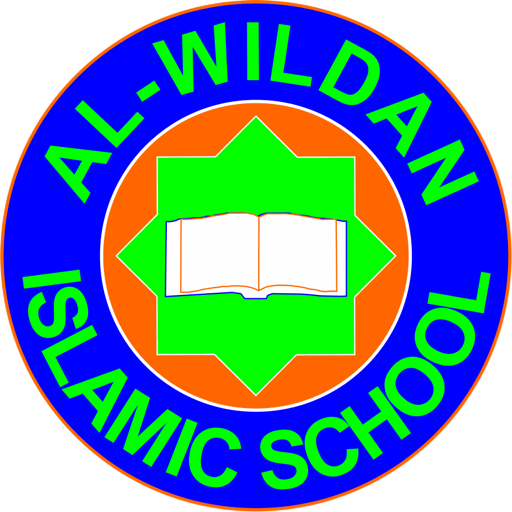

Pada hari ini, Senin, 23 November 2026, telah diserahterimakan hak akses serta kredensial akun operasional Sistem Informasi Inspeksi Kebersihan Al-Wildan Islamic School 8 Kemang Bogor kepada pihak Administrator Sekolah, dengan rincian data sebagai berikut:
| No | Jabatan / Role | Nama Lengkap | Email / Username Login | Password Default | Tugas & Wewenang |
|---|---|---|---|---|---|
| 1 | Super Admin | Administrator Al Wildan | admin@alwildan.sch.id |
Admin@123 | Akses penuh sistem, manajemen user, lokasi & pengaturan. |
| 2 | Supervisor | Pak Arif (Supervisor) | arif.supervisor@alwildan.sch.id |
Alwildan@123 | Monitoring harian staf, atur jadwal, evaluasi foto & cetak laporan. |
| 3 | Penilai | Kepala Sekolah SD (Penilai) | kepsek.sd@alwildan.sch.id |
Alwildan@123 | Penilai & evaluasi mutu kebersihan unit SD & fasilitas umum. |
| 4 | Penilai | Kepala Sekolah SMP/SMA (Penilai) | kepsek.smpsma@alwildan.sch.id |
Alwildan@123 | Penilai & evaluasi mutu kebersihan unit SMP & SMA. |
| No | Nama Staf Kebersihan | Email / Username Login | Password | Penugasan Area Kerja Utama |
|---|---|---|---|---|
| 1 | Ahmad Fauzi (Staf 1) | petugas1@alwildan.sch.id |
Alwildan@123 | Gedung A Lantai 1 (Lobby Utama & Ruang Kelas 1A SD) |
| 2 | Bambang Sutrisno (Staf 2) | petugas2@alwildan.sch.id |
Alwildan@123 | Gedung A Lantai 1 (Kantor Kepsek/TU SD & Toilet Guru/Tamu) |
| 3 | Dedi Supriyadi (Staf 3) | petugas3@alwildan.sch.id |
Alwildan@123 | Gedung A (Musholla / Masjid Al-Wildan & Toilet Lt 2) |
| 4 | Hendra Setiawan (Staf 4) | petugas4@alwildan.sch.id |
Alwildan@123 | Gedung A Lantai 2 (Ruang Kelas 3A SD & Lab Komputer SD) |
| 5 | Joko Wahyudi (Staf 5) | petugas5@alwildan.sch.id |
Alwildan@123 | Gedung B Lantai 1 (Lobby Gedung B & Ruang Kelas 7A SMP) |
| 6 | Mulyadi (Staf 6) | petugas6@alwildan.sch.id |
Alwildan@123 | Gedung B Lantai 1 (Kantor Guru SMP/SMA & Toilet Siswa Lt 1) |
| 7 | Rian Hidayat (Staf 7) | petugas7@alwildan.sch.id |
Alwildan@123 | Gedung B Lantai 2 (Ruang Kelas 10 SMA & Laboratorium IPA) |
| 8 | Saepudin (Staf 8) | petugas8@alwildan.sch.id |
Alwildan@123 | Gedung B Lantai 2 (Perpustakaan, Ruang Rapat & Toilet Lt 2) |
Staf kebersihan wajib melakukan pembersihan awal pagi dan mengunggah dokumentasi foto ruangan beserta checklist mutu sebelum pukul 09:00 WIB.
Staf kebersihan wajib melakukan pembersihan berkala siang hari dan mengunggah dokumentasi foto kedua sebelum pukul 14:00 WIB.